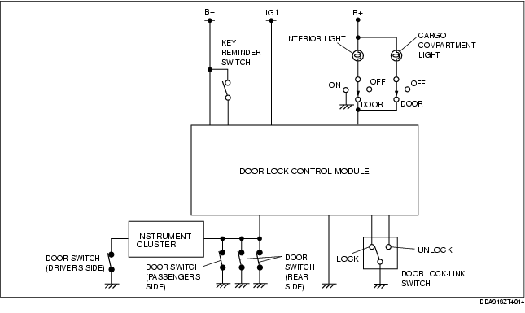

Interior light control system function • The door lock control module changes the illumination condition and illumination level of the interior light (Door position), and the cargo compartment light (Door position) according to whether the doors are opened or closed. 